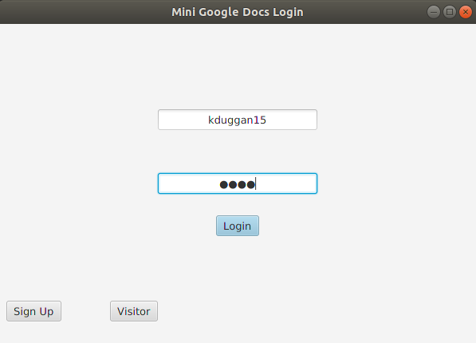
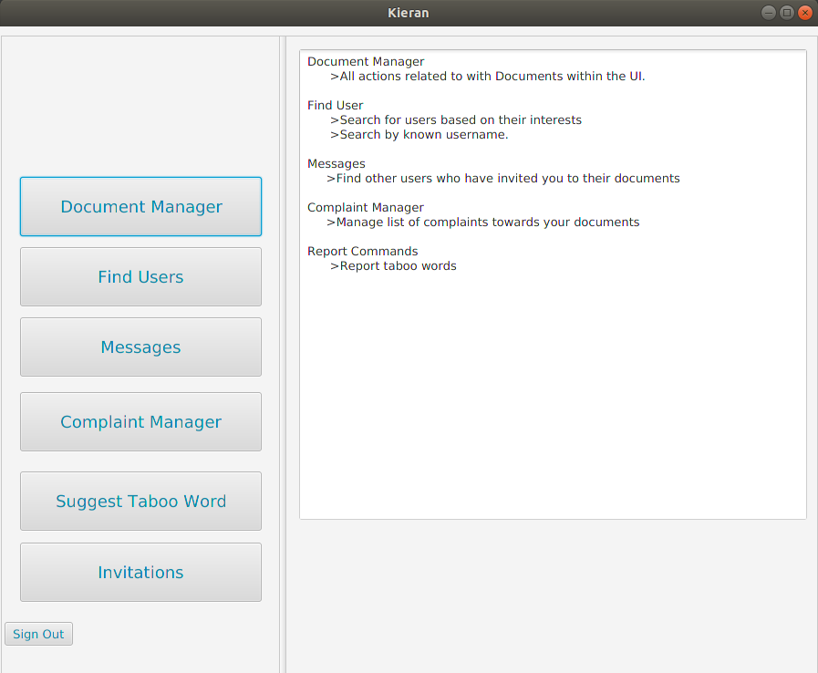
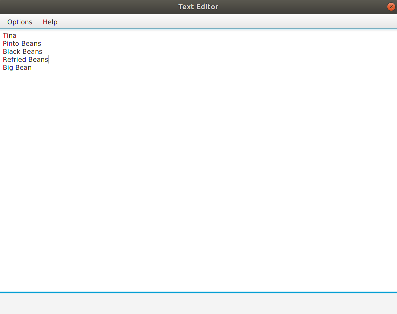
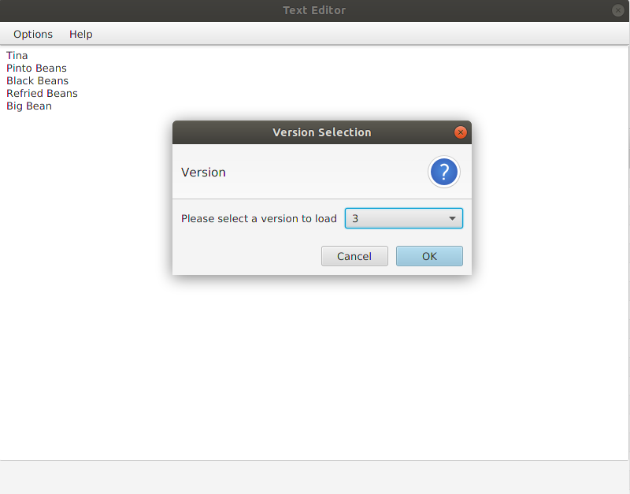

Document System
(Fall 2018)
A document system built from a specification assigned in software engineering class. My
personal work includes the document manager, text editor, and simple document versioning.
Collaborators:
Github: jontran1
Github: ethen001
Github: stevenx95
Technology
- Java
- JavaFX
- MySQL
Demo
Login Screen
The user is presented with a login screen where they can enter their information. Their login information is cross referenced with the login database, and if their infomration is correct, they are logged in and presented with the main menu
Main Menu
From the main menu, the user can select from a variety of functions. My personal work is in the document manager, so this is where we will go.
Document Manager
From the document manager, the user can complete many tasks, such as:
- Create new documents
- Open a selected document
- Bring up a list of their own documents, shared documents, and public documents
Text editor
Here, the user can freely edit the document. Once they are satisfied with their changes, they can select "submit changes" from the dropdown menu
Versioning
Once the user saves the document, the program finds the difference between the new and old version and simply saves the change between them. (courtesy https://github.com/google/diff-match-patch) This makes it possible to retrieve old versions of documents easily
